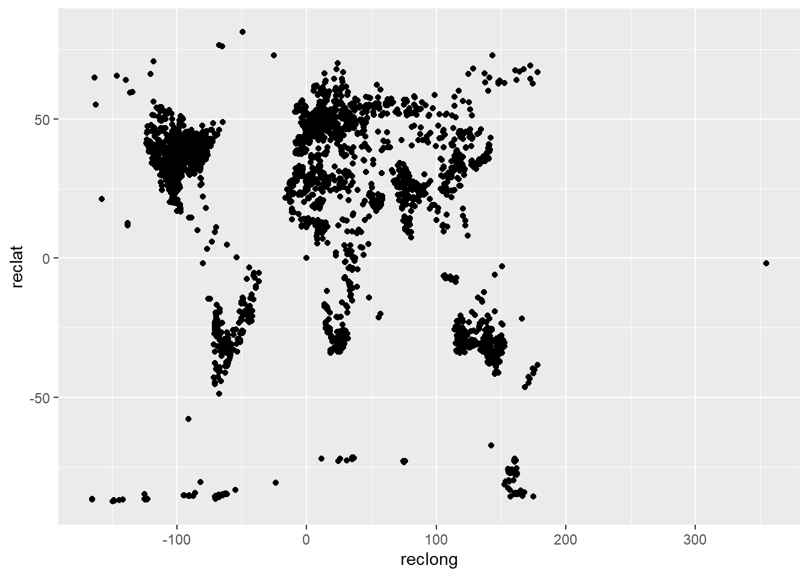
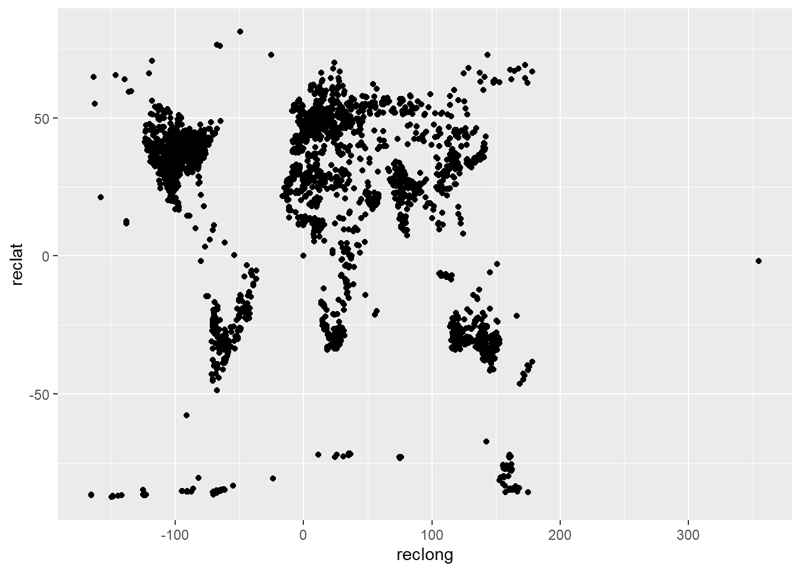
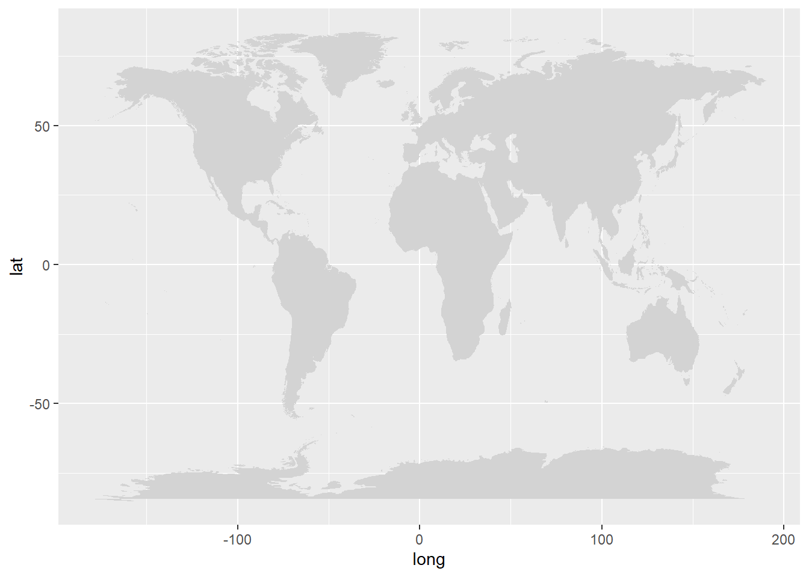
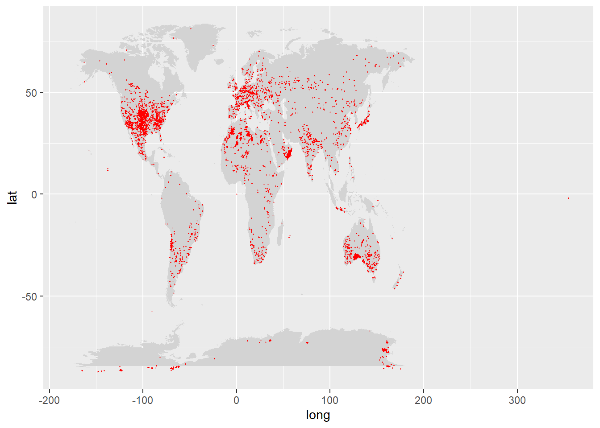
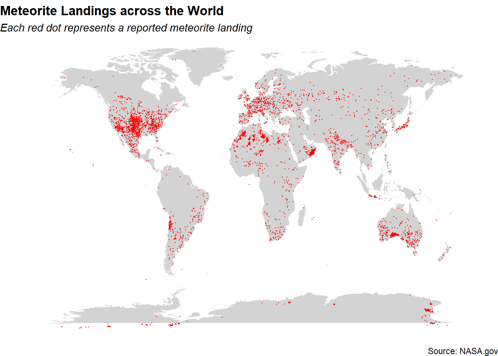
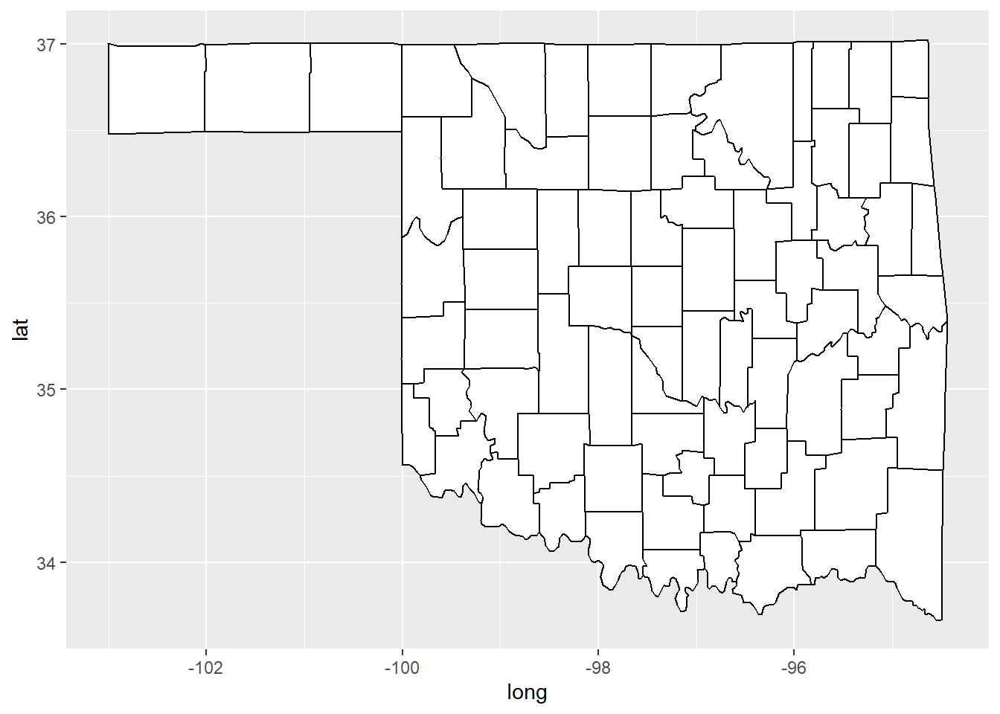
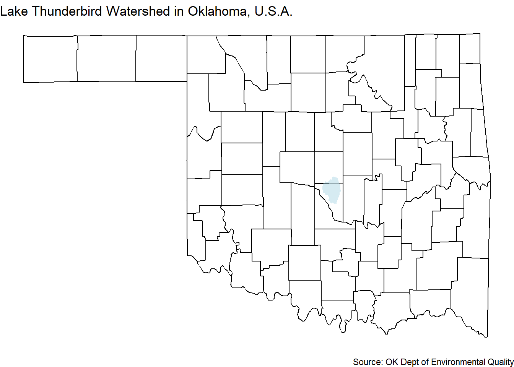

library(ggplot2)
# Load Meteorite Landings data
met_data <- read.csv("data/Meteorite Landings.csv")
# Plotting data with 'geom_point'
ggplot(met_data) +
geom_point(data = met_data, aes(x=reclong, y = reclat))
Extra Notes: Visualizing Spatial Data in R
Plotting spatial data with ggplot2 requires the same graphical grammar as any other type of graphic. (Note: There are other packages that might rely on different principles, e.g. leaflet. I’ll focus here on static graphics with ggplot2.)
We need:
You need two types of data.
First, you need data with geographic boundaries. For common boundaries, you can try R packages like maps, mapsdata, and oz. For other boundaries, you’ll likely need either a shapefile or a geoJson file.
Shapefiles with rgdal in R
geoJson files with geojsonio in R
Second, you need your research data that corresponds to the geographic boundaries. If you are plotting precise events, you need research data with appropriate scales (e.g. longitude and latitude). If you are plotting regions, you need research data with unique IDs that match the research data to the geographic data.
The coordinate system will usually be longitude and latitude.
As with any figure, you should be careful to choose an appropriate scale. For example, it is customary when plotting information about the United States to not keep Alaska and Hawaii at-scale; instead, they are often included as “cut-ins” at the bottom of a figure. See an example of handling scale with Alaska and Hawaii.
Maps with ggplot2 will likely include geom_polygons and may also include geom_point, geom_raster, geom_line, etc.
maps)This example uses NASA Meteorite Landing data. You can access the data here: Access NASA’s Meteorite Landing Data.
library(ggplot2)
# Load Meteorite Landings data
met_data <- read.csv("data/Meteorite Landings.csv")
# Plotting data with 'geom_point'
ggplot(met_data) +
geom_point(data = met_data, aes(x=reclong, y = reclat))
# install.packages('maps')
# help(package='maps')
library(maps)
map('world') # quick mapping
# Grab the 'world' map data and store as dataframe
world <- map_data('world')# Plot world map with ggplot
ggplot() +
geom_polygon(data = world, aes(long, lat, group=group), fill = 'lightgrey')
# Combine world map with Meteorite data
ggplot() +
geom_polygon(data = world, aes(long, lat, group=group), fill = 'lightgrey')+
geom_point(data = met_data, aes(x=reclong, y = reclat), color = 'red',size=.25)

geojsonio)This example uses data from the Oklahoma Department of Environmental Quality (OK DEQ). You can access the data here: Access OK DEQ Watershed Geographic Data.
#install.packages('geojsonio')
library(geojsonio)
library(broom)
watershed <- geojson_read("data/Lake_Thunderbird_Watershed.geojson", what = "sp")
watershed <- tidy(watershed)# Plot the watershed
ggplot() +
geom_polygon(data = watershed, aes(long, lat), fill = 'lightblue')
# Plot the state of OK with county lines
county <- data.frame(map_data('county'))
oklahoma <- county[county$region=='oklahoma',]
ggplot() +
geom_polygon(data = oklahoma, aes(long, lat, group=subregion), fill = 'white', color = 'black')
# Combine with Lake Thunderbird Watershed
ggplot() +
geom_polygon(data = oklahoma, aes(long, lat, group=subregion), fill = 'white', color = 'black') +
geom_polygon(data = watershed, aes(long, lat), fill = 'lightblue', alpha =.5) +
labs(title = 'Lake Thunderbird Watershed in Oklahoma, U.S.A.',
caption = 'Source: OK Dept of Environmental Quality') +
theme_void() 